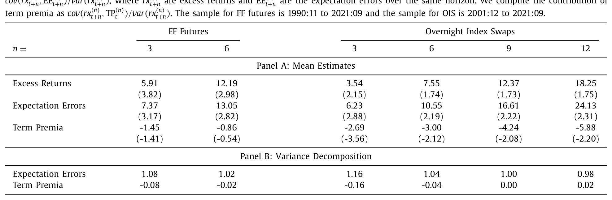
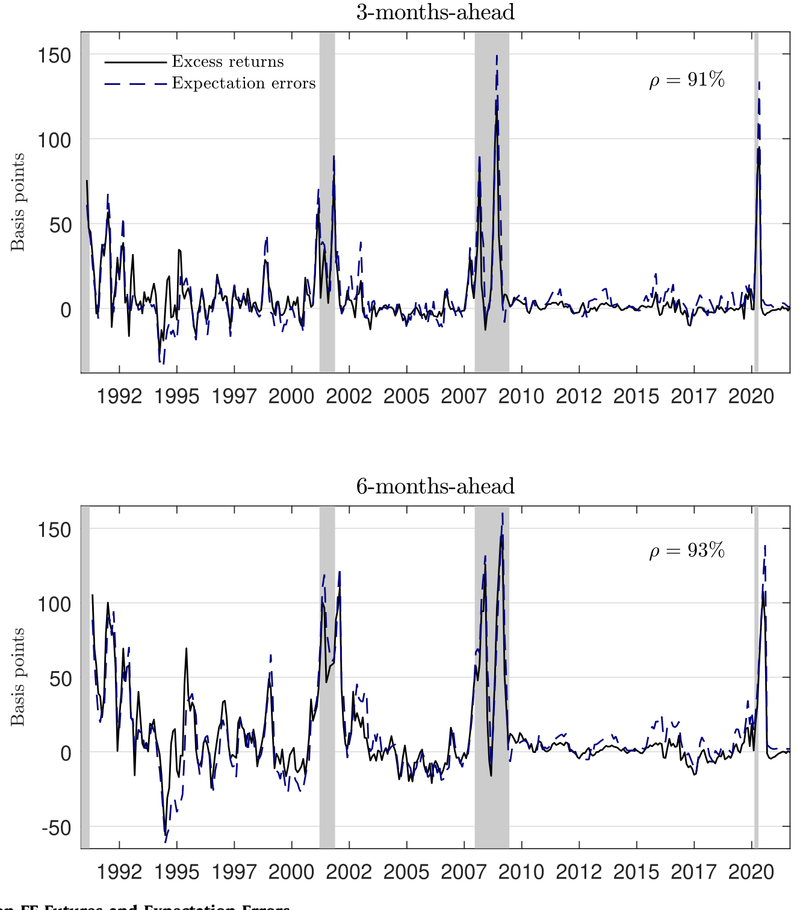
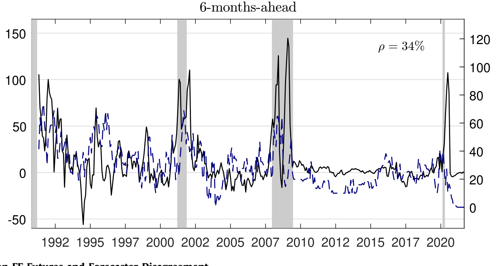
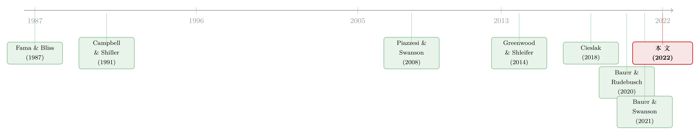

被错读的，不是风险，是美联储
本文读的是 Schmeling, Schrimpf & Steffensen (2022, Journal of Financial Economics)：他们用调查数据把货币市场衍生品（联邦基金期货、隔夜指数掉期）上的超额收益拆成「期限溢价」和「预期误差」两块，发现几乎全部超额收益来自预期误差——市场长期低估了美联储在衰退中降息的力度——而期限溢价微乎其微，甚至略为负。于是，这些合约里那个著名的「偏差」，与其说是风险补偿，不如说是投资者对央行反应函数的一次次「读错」。
1 一个被讲了三十年的故事
先说一个几乎写进所有固定收益教科书的「事实」。
如果你今天去看联邦基金期货 (fed funds futures, FF futures) 或者隔夜指数掉期 (overnight index swaps, OIS) 报出来的远期利率，再等上几个月，把它和那段时间真正实现的短端利率比一比，你会发现一件颇为尴尬的事：这些合约报出来的利率，系统性地高于事后真正实现的利率。换句话说，货币市场衍生品是短端利率的「有偏预测器」（biased predictor）。一个做多这些合约的人——锁定今天的固定利率、未来支付浮动短端利率——平均下来是赚钱的。
这不是新闻。从 Krueger and Kuttner (1996) 到 Gürkaynak et al. (2007)，人们早就知道 FF futures 是预测短端利率最准的工具之一，却也同时系统性地高估了未来利率。问题在于：这笔稳稳赚到的钱，到底是什么的报酬？
过去三十年里，主流答案只有一个词：期限溢价（term premium）。在 Piazzesi and Swanson (2008)、Cochrane (2011)、Ludvigson and Ng (2009) 这一脉的解释里，经济下行期人们害怕风险，于是愿意为「锁定利率」支付一笔逆周期 (countercyclical) 的风险补偿；做多合约的人赚到的，就是这笔补偿。一切都在理性预期、完全信息 (full-information rational expectations, FIRE) 的框架内自洽：预期不会系统性犯错，所以超额收益只能来自风险定价。
这篇论文，要把这个故事整个翻过来。
2 一个被忽略的细节：它们根本不是「投资品」
真正撬动全文的，是一个常被略过的常识：FF futures 和 OIS 是纯粹的金融衍生品，不是债券，不是融资工具，进场时不需要付一分钱本金（zero-cost portfolio）。
这一点为什么重要？因为「期限溢价是逆周期风险补偿」这套说法，本质上是把这些合约当成了「在坏年景里会亏钱、所以需要补偿」的风险资产。可现实恰恰相反：做多 FF futures 或 OIS，在央行降息时（也就是经济下行时）payoff 最高——它天然是一份对冲坏消息的保单。从标准资产定价的角度看，一份能在衰退里赚钱的合约，其期限溢价理应是负的，而不是正的。
于是一个自然的问题浮出来了：如果按理论期限溢价该为负，那市场上观察到的那笔实实在在为正的超额收益，又是从哪里冒出来的？
作者的回答是——别再猜了，去问问市场参与者当时到底是怎么预期的。
3 核心：把超额收益一刀切成两半
这是全文最干净、也最关键的一步。先把合约的损益写出来。设 \(f_t^{(n)}\) 为 \(t\) 月末观察到的、\(n\) 个月后结算的合约固定利率，\(i_{t+n}\) 为事后真正实现的短端利率，则做多合约到期的超额收益为：
$$rx_{t+n}^{(n)} = f_t^{(n)} - i_{t+n}$$
对上式取 \(t\) 时刻的条件期望，就能把固定利率 \(f_t^{(n)}\) 拆开——它无非是「市场要求的预期超额收益」加上「市场对未来短端利率的预期」：
$$f_t^{(n)} = E_t\!\left[rx_{t+n}^{(n)}\right] + E_t\!\left[i_{t+n}\right]$$
把它代回损益式并重排，超额收益就被劈成两块：
$$rx_{t+n}^{(n)} = \underbrace{E_t\!\left[rx_{t+n}^{(n)}\right]}_{\text{term premium}} + \underbrace{\left(E_t\!\left[i_{t+n}\right] - i_{t+n}\right)}_{\text{expectation error}}$$
前一块是期限溢价（事前要求的风险补偿）；后一块是预期误差——市场预期的短端利率与事后真实利率之差。这一步的直觉值得停一下：把期限溢价挪到等式左边，
$$rx_{t+n}^{(n)} - E_t\!\left[rx_{t+n}^{(n)}\right] = E_t\!\left[i_{t+n}\right] - i_{t+n}$$
左边是「意料之外的那部分收益」，右边是「预期误差」。这等式在告诉你一件朴素却深刻的事：事后赚到的钱凡是超出事前要求的部分，必然来自「利率没按大家预期的走」。具体说，做多的人之所以赚到意外之财，正是因为短端利率最后低得出乎意料。
在 FIRE 假设下，右边长期应当平均为零——人不会系统性犯错。所以，只要我们能独立地量出「市场当时的预期」，就能检验：这笔钱到底是风险补偿，还是一次次系统性的误判。
那「市场当时的预期」从哪来？答案是调查。作者用 Blue Chip Financial Forecasts——约 45 位来自一线机构、真正在市场里下注的专家——给出的固定期限短端利率预期 \(S_t^{(n)}\)（\(n=3,6,9,12\) 个月），把损益式里加一项减一项，得到可直接落地估计的版本：
第一项 \(TP_t^{(n)}=f_t^{(n)}-S_t^{(n)}\) 是调查隐含的期限溢价；第二项 \(EE_{t+n}^{(n)}=S_t^{(n)}-i_{t+n}\) 是预期误差。注意它们是可以分头算清楚的：前者用今天的报价和今天的调查，后者用今天的调查和未来的实现值。剩下的，就是看数据站在哪一边。
4 反转：几乎全部，都是预期误差
数据给出的答案非常干脆。
如表 1 所示，无论 FF futures 还是 OIS，平均超额收益都为正且经济上可观，落在大约 4 到 18 个基点之间：FF futures 三月期为 5.91 个基点（\(t=3.82\)）、六月期 12.19（\(t=2.98\)）；OIS 从三月期的 3.54 一路升到十二月期的 18.25（\(t=1.75\)）。这再次印证了远期利率系统性高于事后实现值。

Table 1
但真正关键的，是这笔钱的归属。调查隐含的期限溢价不仅小，而且清一色为负：OIS 三月期 $-2.69$ 个基点（\(t=-3.56\)）、十二月期 $-5.88$（\(t=-2.20\)）——和前面「对冲资产理应负溢价」的理论预期严丝合缝。与此同时，预期误差与实现的超额收益几乎一样大，且在所有期限上都显著为正：FF futures 三月期 7.37 个基点（\(t=3.17\)）、OIS 十二月期高达 24.13（\(t=2.31\)）。
Panel B 的方差分解更是把话说死了：预期误差对超额收益方差的贡献系数在 0.98 到 1.16 之间——也就是100% 上下；而期限溢价的贡献在 $-0.16$ 到 0.02 之间，约等于零。
结论是反直觉的：货币市场衍生品里那个著名的「偏差」，基本不是风险补偿。它是一连串没有被时间抹平的系统性预期误差。
这和「不需要玄学风险、超额收益其实被预期误差吃掉」的那条研究线索遥相呼应（关于股票横截面里类似的故事，可参见《不需要那些「玄学风险」》）。
5 为什么误差不会「平均掉」？——美联储的尾部
到这里，一个更尖锐的问题来了：理性预期允许犯错，但要求错误长期平均为零。可这里的预期误差三十年都没归零，还系统性偏向一个方向。为什么？
作者顺着误差的「形状」诊断下去，得到一个叫「保守主义（conservatism）」的解读：当市场参与者正确判断了利率变动的方向时，他们往往低估了变动的幅度。而且这个低估是高度非对称的——对降息的低估，远比对加息的低估严重。
一句话：过去三十年，市场一次次低估了美联储在经济下行时降息的「狠劲」。
把这条线索接着往下拉，三个相互印证的事实浮现出来：
其一，与泰勒规则的偏离相关。 当美联储采取宽松立场、把短端利率压到泰勒规则 (Taylor rule) 所建议的水平之下时，市场对未来利率的预期就显得「太高」了——相对于随后真正实现的利率而言。
其二，股价下跌预示更高的超额收益。 股价大跌之后，FF futures 和 OIS 的超额收益显著走高，样本内、样本外皆然，且在控制了 Piazzesi and Swanson (2008) 那套用来刻画逆周期期限溢价的宏观变量之后依然稳健。更妙的是这里也有非对称：只有股价下跌能预测更高的超额收益，股价上涨则毫无预测力。这显然不像一个对称的风险溢价该有的样子——它更像是「坏消息触发了美联储一次出乎意料的猛降息」。

Figure 1: Excess Returns on FF Futures and Expectation Errors
其三，预测者分歧预示预期误差。 用预测者之间的预期离散度衡量的不确定性，是预期误差的强预测变量。当这种不确定性高企时，美联储随后降息的幅度比市场预期的更大，于是给做多者送上了正的超额收益。

Figure 3: Excess Returns on FF Futures and Forecaster Disagreement
把三者拼起来，最可信的解释就成型了：最难学习的，是央行对那些罕见、但巨大的负向冲击会如何反应。这类「rare events」不常发生，样本太少，市场参与者只能在实时中边走边学（learn in real time）；每当股价崩跌、分歧飙升、基本面恶化，美联储就会把利率砍到比此前预期更低的水平，预期误差由此系统性地、可预测地产生。这与 Bauer and Swanson (2021) 强调的「市场对美联储反应函数的参数缺乏完整信息、需要实时学习」的故事高度一致。
作者特意提醒：这种偏离 FIRE，不该被读作投资者非理性。它反映的是关于央行反应函数的「信息不完全 + 实时学习」，学习过程在数据上呈现为对预期假说基准的系统性、可预测的偏离。（关于「学习央行」如何成为定价因子的另一个视角，可参见《加息到底有没有用？》。）
最后，作者把镜头拉到美国之外：澳大利亚、加拿大、欧元区、英国、日本、瑞士六个货币区。在有调查数据的三个区（欧元区、英国、瑞士），预期误差与 OIS 超额收益强相关；而在全部六个区，本地股市都以负且显著的系数预测超额收益。这说明，这套机制不是美联储独有的怪癖，而是一个更普遍的现象。
6 文献脉络
这篇论文站在两条线索的交汇处。
一条是期限结构与预期假说（expectations hypothesis, EH）的老问题。Fama and Bliss (1987)、Campbell and Shiller (1991) 早就在长端利率上拒绝了 EH，把超额收益的可预测性归给时变的期限溢价；Piazzesi and Swanson (2008) 则把 FF futures 的偏差解释成「风险调整后的预测」，即逆周期风险溢价。短端的证据一直较为含混——Longstaff (2000) 发现三月期以内的回购利率几乎是短端利率的无偏预测器，期限溢价小到可忽略。
另一条是用调查数据给资产收益「验伤」的新兴文献。Froot (1989)、Gourinchas and Tornell (2004)、Bacchetta et al. (2009)、De la O and Myers (2022) 都表明，预期误差对股票、债券、外汇的超额收益举足轻重；Greenwood and Shleifer (2014) 进一步证明调查预期与真实行为（如基金资金流）紧密对应，回应了 Cochrane (2011) 对调查数据「噪声大、难解释」的质疑。（关于「信念到底该问问卷还是问价格」的争论，可参见《想知道投资者信什么？去问价格，别问问卷》。）

而最直接的前辈，是 Cieslak (2018)：她在国债市场里指出，美联储降息比预期更猛，制造了预期误差和巨额按市值计价的盈利。本文的贡献，在于把这条逻辑搬到货币市场衍生品——人们公认用来读取短端利率预期的工具——上，干净地证明了预期误差（而非期限溢价）的主导地位，并把它直接锚定到央行反应函数的时变性、以及金融条件恶化这条触发链上。Bauer and Rudebusch (2020) 关于「利率中枢下移（falling stars）」的解释，被作者用 Cieslak (2018) 的证据排除在主因之外——驱动误差的是对实际利率路径的误判，而非对趋势的误判。
7 评论与延伸（Q&A + 研究方向）
(a) 几个可能的疑问
Q：调查预期会不会本身就是「错」的代理变量，从而把结论变成同义反复？
这是用调查做分解的老担忧。作者的防御有三层：一是 Blue Chip 的受访者是真正在市场里下注的约 45 家一线机构，调查预期与真实行为对齐的证据很多（Greenwood and Shleifer, 2014 等）；二是结果不是「调查随便取个数都成立」，而是呈现出方向正确、幅度低估、且对降息尤甚的特定结构，纯测量噪声很难制造这种系统性非对称；三是预期误差能被事前可观察的股价、分歧等变量预测，这是纯噪声做不到的。
Q：期限溢价为负，是不是模型设定或泰勒规则选择搞出来的假象？
作者专门做了稳健性检验，说明结论不依赖具体的泰勒规则类型，也不是测量问题导致的；而且「负的期限溢价」本身就有理论支撑——做多 FF futures/OIS 是一份在衰退里赚钱的对冲资产，标准资产定价本就预言它的溢价为负。数据与理论方向一致，反而增强了可信度。
Q：「预期误差主导」是不是就等于说市场参与者非理性、很蠢？
不是，作者反复强调这一点。把它读成非理性是误读；更准确的图景是「关于央行反应函数的信息不完全 + 实时学习」。对一个几十年才发生几次的尾部事件，样本本就稀少，理性的贝叶斯学习者也会在事前系统性地低估降息幅度。
Q：为什么只有股价下跌有预测力，上涨没有？这不奇怪吗？
恰恰是这个非对称性最能区分两种解释。对称的风险溢价应当对涨跌都反应；而「美联储对罕见负向冲击的反应难以学习」这套故事，天然只在坏消息一侧发力——股价大跌触发超预期的猛降息，股价上涨却不会触发对称的「猛加息」。数据的非对称，正是机制的指纹。
Q：和 Cieslak (2018) 到底差在哪，会不会只是换个市场重做一遍？
三点增量：其一，战场从国债换到货币市场衍生品，而这正是业界用来读短端预期的工具，结论因此更贴近政策含义；其二，把预期误差直接挂到央行反应函数的时变性与金融条件恶化上，给出了「为什么会错」的机制；其三，做了跨国验证，证明这不是美联储独有现象。
Q：这对「预期假说被拒绝」的经典结论意味着什么？
一个温和但重要的再平反：短端的远期信息不该因为「期限溢价扭曲」而被弃用——既然溢价近乎为零，它其实是市场短端利率预期的可靠信号，正如 EH 所设想的那样。被「污染」的不是信号，而是市场对央行的学习过程。
(b) 几个可能的研究问题与提案
-
把这套分解搬到公司债与信用利差。 【经济故事】信用利差里同样掺着「违约/流动性风险溢价」和「对违约率的预期误差」。如果衰退里投资者也系统性低估了违约潮（或低估了央行/财政的兜底），那么信用超额收益里可能也藏着一块被误读成「信用风险溢价」的预期误差。 【可行性】中。需要 TRACE 债券价格 + 对违约率/评级迁移的调查预期（如 Blue Chip 或分析师预测），后者较难获得高频固定期限的版本；识别上可借鉴本文的分解框架，难点在于构造可信的「事前预期」代理。
-
外资持有人是否系统性误读了美联储？ 【经济故事】本文的预期误差主体是本土机构。外国投资者面对的信息集、对美联储反应函数的熟悉度都不同，可能犯下幅度更大、方向不同的误差，并通过其在美债/货币市场的头寸放大或缓冲价格。 【可行性】中偏低。需要按持有人国别拆分的头寸数据（TIC、央行储备）配上分国别的利率预期调查，后者非常稀缺；可行的折中是用跨国 OIS 调查数据（欧元区/英国/瑞士已有）做异质性分析。
-
预期误差与货币市场流动性的交互。 【经济故事】分歧飙升、股价崩跌的时点，往往也是货币市场流动性最紧、做市能力最弱的时点。预期误差导致的超额收益里，有多少其实是在流动性枯竭时被放大的？ 【可行性】高。OIS/FF futures 的买卖价差、成交量、交易商资产负债表数据可得，可在本文的可预测性回归里加入流动性交互项，识别相对直接。
-
「央行更透明地沟通尾部反应」能否真的缩小预期误差？ 【经济故事】作者在政策含义里提出，央行应更明确地沟通对深尾冲击的可能反应。这是一个可检验的命题：前瞻指引 (forward guidance) 制度变化、点阵图引入等事件，是否在事件后降低了预期误差的幅度与可预测性？ 【可行性】中。可用各国央行沟通制度改革作为准自然实验，做事件研究或 DiD；难点是沟通改革常与其他政策同时发生，需小心处理混淆因素。
8 我的判断与参考文献
贡献。 这篇文章最漂亮的地方，是用一个几乎不需要结构假设的简单恒等式，配上一份高质量调查，就把「货币市场远期偏差 = 风险溢价」这个流行了三十年的解读掀翻，并给出了一个连贯、可证伪、且能跨国复制的替代故事。「期限溢价近乎为零、甚至为负」这一条，单拎出来就足够冲击直觉；而「股价下跌的非对称预测力」则是把「学习央行尾部反应」这套机制钉死的关键证据。
对识别的担忧。 我最想追问的仍是调查数据的代表性与时点对齐：Blue Chip 的固定期限预期与衍生品合约期限的匹配（作者放在 Internet Appendix 里）是整条链条的承重点，任何系统性的期限错配都可能在分解里伪装成「预期误差」。其次，预期误差的「不可预测」检验依赖样本里有限的几次衰退（1990、2001、2008、2020），尾部事件本就稀少，统计功效与外推都需谨慎——三十年里真正贡献误差的，可能就是那么几个深尾时点。
后续想看的。 我最想看到把这套分解推进到信用市场和按持有人类型的版本：如果连公司债超额收益的大头也来自「对违约/救助的预期误差」，那么「信用风险溢价」这个概念本身就需要重新称重；而如果外资持有人的误差结构与本土机构系统性不同，则它对美债与美元的定价含义会非常丰富。
参考文献
- Bacchetta, P., Mertens, E., Van Wincoop, E. (2009). Predictability in financial markets: what do survey expectations tell us? Journal of International Money and Finance 28(3), 406–426.
- Bauer, M.D., Rudebusch, G.D. (2020). Interest rates under falling stars. American Economic Review 110(5), 1316–1354.
- Bauer, M.D., Swanson, E.T. (2021). An Alternative Explanation for the 'Fed Information Effect'. NBER Working Paper 27013.
- Campbell, J.Y., Shiller, R.J. (1991). Yield spreads and interest rate movements: a bird's eye view. Review of Economic Studies 58(3), 495–514.
- Cieslak, A. (2018). Short-rate expectations and unexpected returns in Treasury bonds. Review of Financial Studies 31(9), 3265–3306.
- Cochrane, J.H. (2011). Presidential address: discount rates. Journal of Finance 66(4), 1047–1108.
- Fama, E.F., Bliss, R.R. (1987). The information in long-maturity forward rates. American Economic Review 77, 680–692.
- Froot, K.A. (1989). New hope for the expectations hypothesis of the term structure of interest rates. Journal of Finance 44(2), 283–305.
- Greenwood, R., Shleifer, A. (2014). Expectations of returns and expected returns. Review of Financial Studies 27(3), 714–746.
- Gürkaynak, R.S., Sack, B., Swanson, E.T. (2007). Market-based measures of monetary policy expectations. Journal of Business & Economic Statistics 25(2), 201–212.
- Longstaff, F.A. (2000). The term structure of very short-term rates: new evidence for the expectations hypothesis. Journal of Financial Economics 58(3), 397–415.
- Piazzesi, M., Swanson, E.T. (2008). Futures prices as risk-adjusted forecasts of monetary policy. Journal of Monetary Economics 55(4), 677–691.
- Schmeling, M., Schrimpf, A., Steffensen, S.A.M. (2022). Monetary policy expectation errors. Journal of Financial Economics 146(3), 841–858.